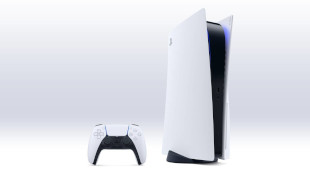
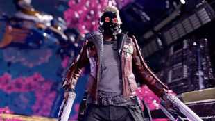
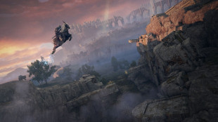

Bayonetta 3 Is 'Progressing Well' Despite Its No Show at E3 2021, Nintendo Says
Bayonetta 3 was first announced at The Game Awards 2017.
Continue Reading

18 New Details We Learned From the Sea of Thieves: A Pirate's Life Showcase
A Pirate's Life is a love letter to the Pirates of the Caribbean films and the Disneyland attraction.
Continue Reading
Sony Wants to Support Cross-Play More, PlayStation Boss Jim Ryan Says
"We support and encourage cross-play."
Continue Reading
Xbox Design Lab Returns, Supports Next-Gen Controller Designs
Design your custom Xbox Series X controller.
Continue Reading

Bayonetta 3 Is 'Progressing Well' Despite Its No Show at E3 2021, Nintendo Says
Cyberpunk 2077 has just released its latest patch, 1.23 - and it makes clear that CD Projekt Red is continuing to work on getting the game to perform better on consoles.
Continue Reading

PS5 Users Can Now Sign Up to Test New Features Early
Registrations are now open for the PS5 System Software Beta Program.
Continue Reading
Cyberpunk 2077 Seems to Be Returning to the PlayStation Store
Cyberpunk appears to be returning to the PlayStation Store.
Continue Reading
Battlefield 2042 Will Use AI Bots To Fill Multiplayer Matches, Allow Co-Op or Solo Play
Artificial intelligence will storm the battlefields for the first time in the series' history.
Continue Reading
Forza Horizon 5 is the Most Anticipated Game of the Show
E3 Awards 2021: Halo: Infinite and Tiny Tina's Wonderlands also among the games highlighted.
Continue Reading

Guardians of the Galaxy Comes to Nintendo Switch, but as a Cloud Version - E3 2021
The new Square Enix Marvel adventure is coming to Switch.
Continue Reading
Disney Let Ubisoft Massive Make a Star Wars Game After a Meeting About Its Avatar Game
We certainly feel like the wait will be worth it.
Continue Reading

Elden Ring: How FromSoft's Largest, Most Free-Form Map Works - Summer of Gaming: IGN News
Elden Ring's map promises to be huge, can be tackled in any order, and is made up of six major areas - but there's even more than that to discover.
Continue Reading
Load More